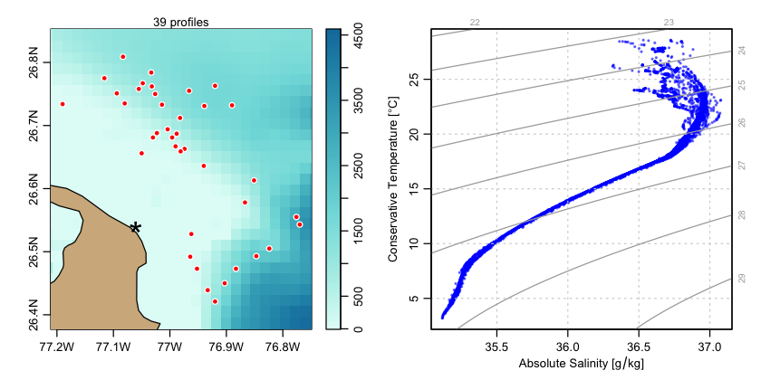

The argoFloats package for the R language provides tools for downloading and analyzing collections of oceanographic Argo float datasets. Its developers are
- Dan Kelley, Dalhousie University
- Jaimie Harbin, Bedford Institute of Oceanography and Dalhousie University
- Clark Richards, Bedford Institute of Oceanography
Since argoFloats is still in an active phase of development, it is not yet available on CRAN. Still, it is easily installed in R with
library(devtools) install_github('ArgoCanada/argoFloats', ref='develop')
where, of course, the devtools package must be installed first, if it is not already present on the user’s system. It is also necessary to have up-to-date versions of the oce and ocedata packages installed, which is accomplished with
install_github('dankelley/oce', ref='develop') install_github('dankelley/ocedata', ref='develop')
Once things are set up as above, it will be possible to use all the features of argoFloats, many of which are illustrated in the documentation for its functions, and in the vignette that is built into the package, both of which are displayed on the user-oriented website. Note that the vignette also lists youtube videos about the package.
For example, the following shows how to create a map and a temperature-salinity diagram for several Argo float profiles made near Abaco Island in the Bahamas. The getIndex() call specifies a directory to hold the index of float profiles, and this directory carries through to the getProfiles() call, which downloads the netcdf files that contain the profile data, and later to the readProfiles() call, which reads those files. Use ?getIndex to learn more about the first function used, ?"subset,argoFloats-method" to learn about the second, etc. (Note that subset and plot are generic functions, so the help is accessed with the comma notation.)
library(argoFloats) library(oce) indexAll <- getIndex(destdir="~/data/argo") index <- subset(indexAll, circle=list(longitude=-77.06, latitude=26.54, radius=30)) profiles <- getProfiles(index) argos <- readProfiles(profiles) par(mfrow=c(1, 2)) plot(index, which="map") plot(argos, which="TS")
